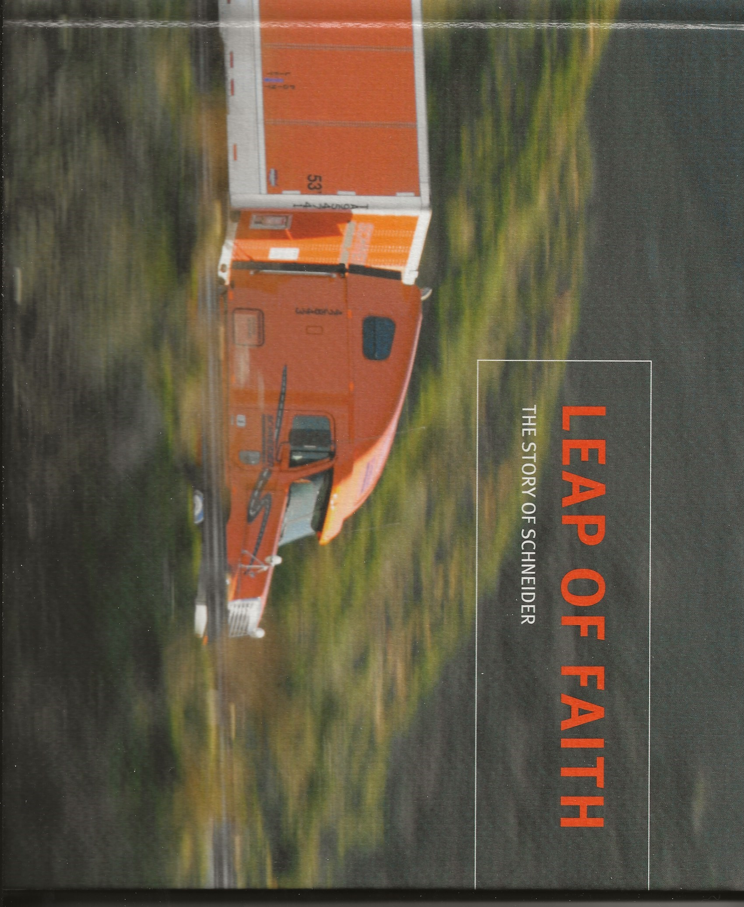

Silver Wheel Freightlines Inc
Portland, OR
MC-107576
DoT 59668
Status - Clsd 1983 - Some assets/authorities bought by Viking Freight Ssytesm

| Seller Name | City | State | Acquired | Data Source |
|---|---|---|---|---|
| Siuslaw Motor Transport Co | Eugene | OR | 1975 | DQ |
| Ringsby-United Inc (A) | Denver | CO | 1983 | DQ |
Patches